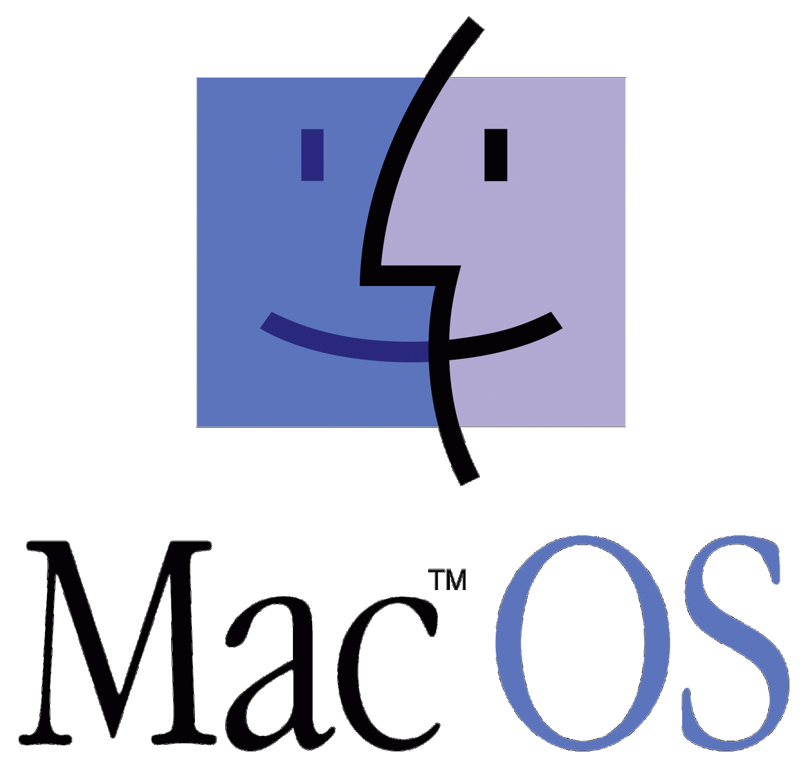

DOS Operating System
DOS- The extremely complex operating system (a joke) which is mainly used for an early command line type of operating system.
Classic Mac OS
Mac hasn't always had the apple logo attached to it, the mac logo used to be a face and it is now used for finder